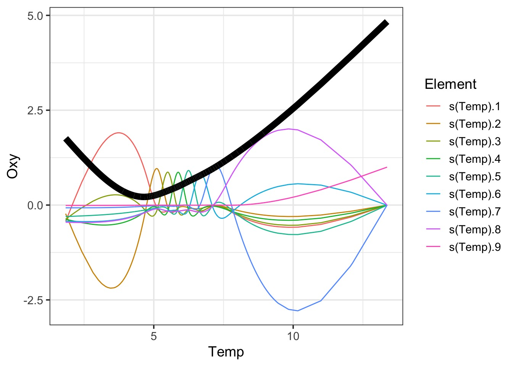
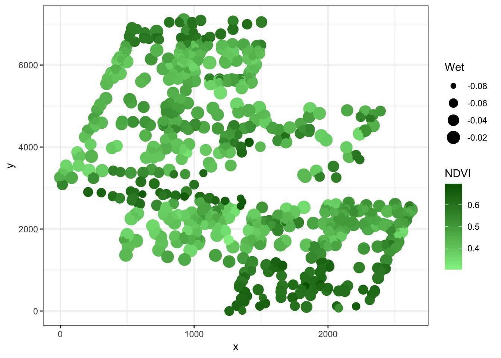
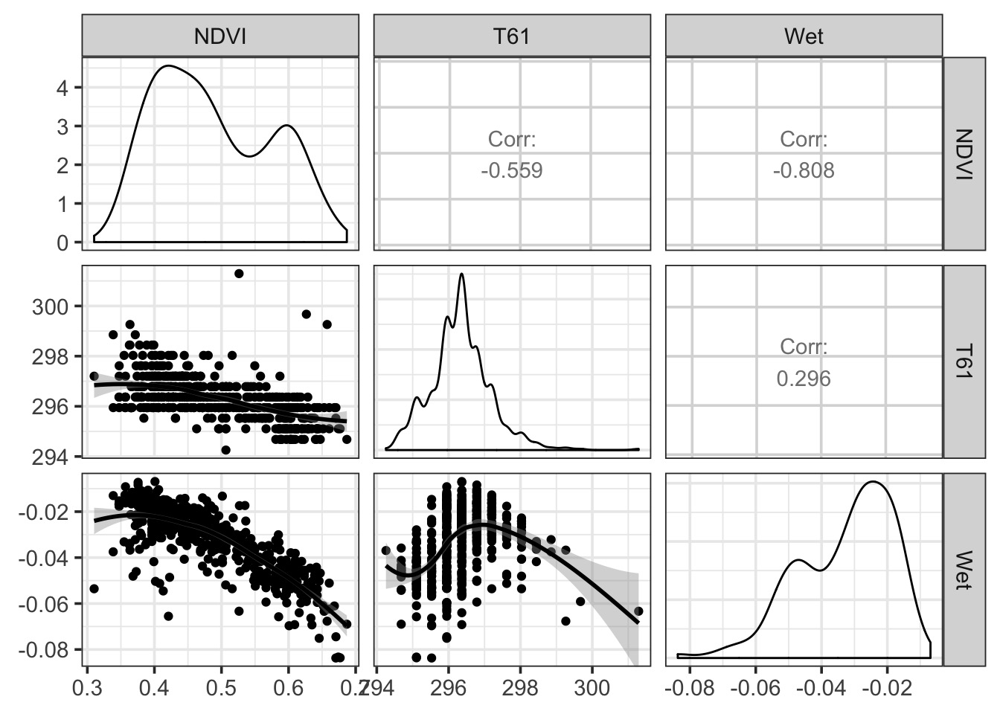
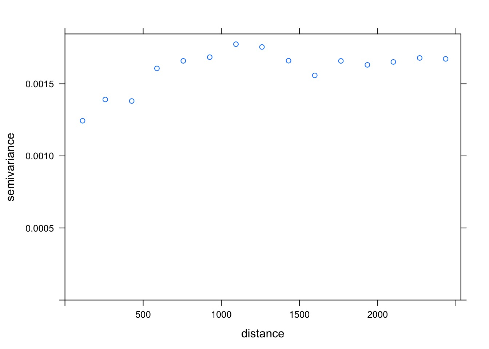
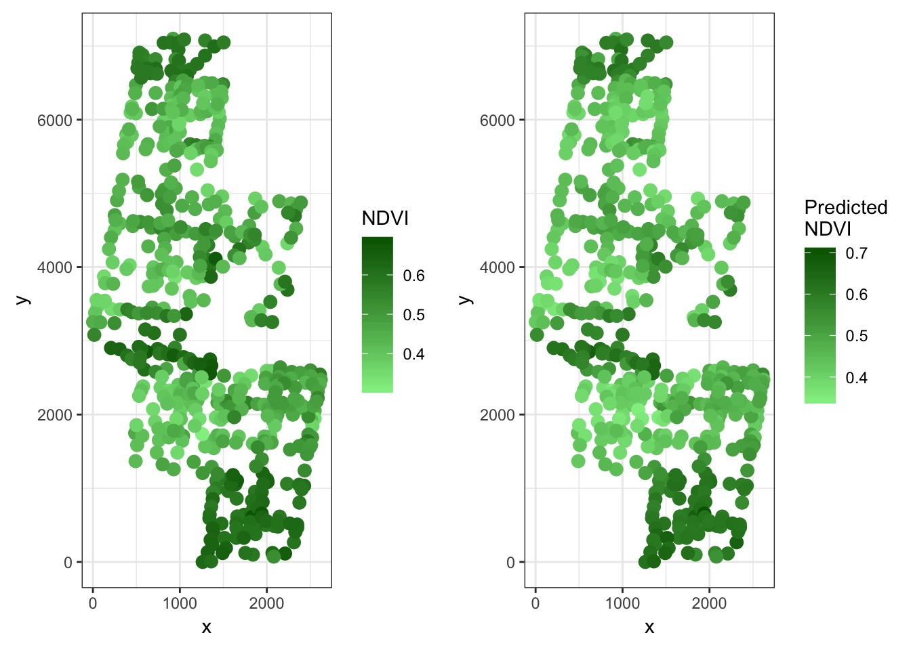
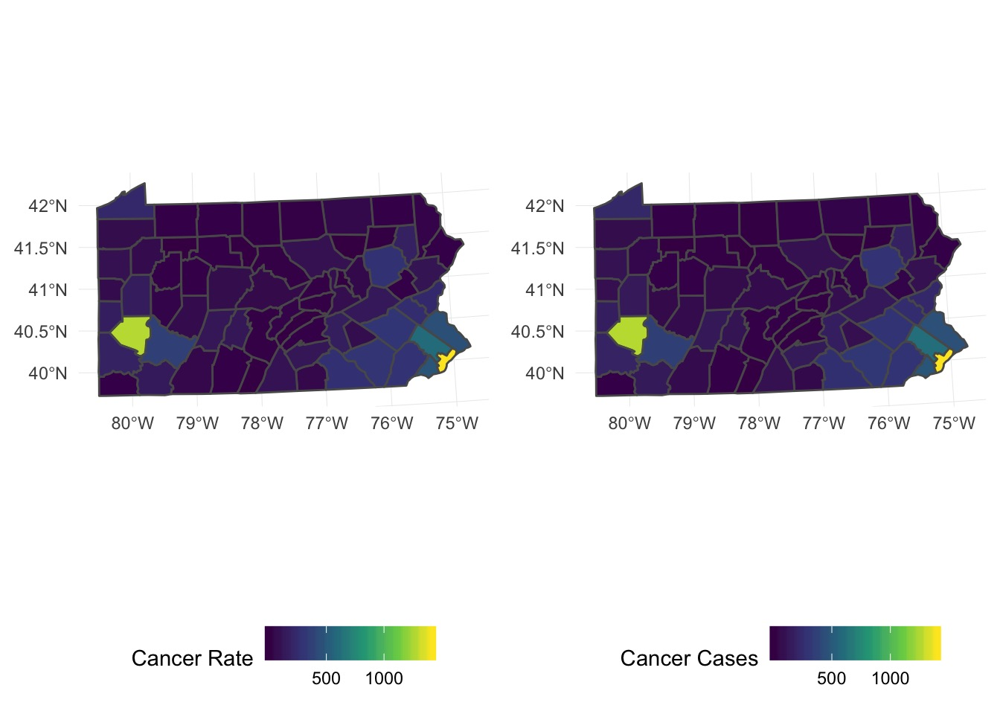
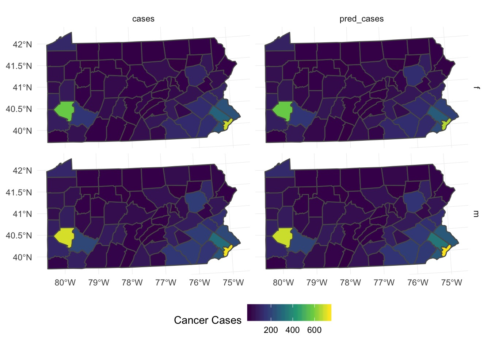
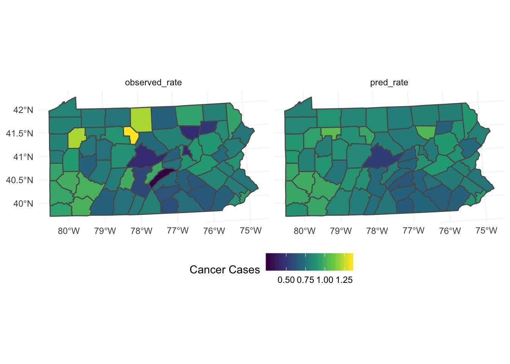

Generalized Additive Models

Outline
- Smoothing
- GAMS and Basis Functions
- Evaluating your GAM
- GAMs, Space, Time
Humboldt Squid data from Julie Stewart Lowndes

A Wiggly Problem: Temperature and Oxygen in Seawater Vertical Profiles

A Linear Fit

Bad Diagnostics!

What about a Polynomial?

Bad Diagnostics, even at the 5th order!

LOESS

LOESS Takes Chunks

LOESS Takes Chunks

LOESS Takes Chunks

LOESS Takes Chunks

Smooth Splines Use Local Area Means

Problems with these techniques
- LM or GLM: We do not meet assumptions, and crazy residuals
- Polynomial: What polynomial to choose? Often misfit.
- LOESS: Not based on formula - purely phenomenological
- Splines: Just smoothed data. No real mechanism.
Outline
- Smoothing
- GAMS and Basis Functions
- Evaluating your GAM
- GAMs, Space, Time
The Central Idea Behind GAMs
- Standard Linear Model \[y\sim \mathcal{N}(\mu, \sigma^{2})\] \[\mu = b_{0}+b_{1}X_{1}\]
- Polynomial Regression \[y\sim \mathcal{N}(\mu, \sigma^{2})\] \[\mu = b_{0}+b_{1}X_{1}+b_{2}X^2\]
- GLM formulation \[y\sim \mathcal{N}(\mu, \sigma^{2})\] \[g(\mu) = b_{0}+b_{1}X_{1}+b_{2}X\]
- GAM formulation \[y\sim \mathcal{N}(\mu, \sigma^{2})\] \[g(\mu) = f(X)\]
The Cental Idea Behind GAMs

Basis Functions: You’ve seen them before
\[f(X) = \sum_{j=1}^{d}\gamma_jB_j(x)\]
Linear Regression as a Basis Function:
\[d = 1\]
\[B_j(x) = x\]
So…. \[f(x) = \gamma_j x\]
Basis Functions: You’ve seen them before
\[f(X) = \sum_{j=1}^{d}\gamma_jB_j(x)\]
Polynomial Regression as a Basis Function:
\[f(x) = \gamma_0 + \gamma_1\cdot x^1 \ldots +\gamma_d\cdot x^d\]
Basis Functions in GAMs
- You can think of every \(B_j(x)\) as a transformation of x
- In GAMs, we base j off of K knots
- A knot is a place where we split our data into pieces
- We optimize knot choice, but let’s just split evenly for a demo
- For each segment of the data, we fit a seprate function, then add them together
Consider our data

Consider our data

A Square Fit

A Cubic GAM

How do we fit
- Use penalized likelihood
\[l_p(\beta)= l(\beta) - \color{darkred}{\mathcal{penalty}}\]
- Penality adjust for ‘wiggliness’
\[l_p(\beta)= l(\beta) - \color{#b2001d}{\lambda B'SB}\]
- S is a penalty matrix, and \(\lambda\)
- \(\lambda\) = 2 by default, but play with it!
Many Different Kind of Basis Functions
- Thin Plate Regression Splines
bs = "tp"
- Default
- Analgous to looking at bending within each region of basis
- Cubic Regression
bs = "cr"
- Raises (x-k) to up to the 3rd power
## Many Different Kind of Basis Functions
- Random Effects
- P-Splines
bs = "ps"
- Penalized B-spline
- Flexible bands passing through several points
Interaction Effect Basis Functions via Tensor Products
bs = "ts"
- One set of penalties per marginal basis
bs = "ti"
bs = "t2"
GAMs and Causal Inference
- We are fitting something to a mean structure, not error
- More direct control of partial correlations
- BUT - estimating many terms for the basis
- So, more akin to mixed models
- Causal implications less clear than fixed effects
Outline
- Smoothing
- GAMS and Basis Functions
- Evaluating your GAM
- GAMs, Space, Time
Evaluating Assumptions

Model Evaluation
Effective DF = DF adjusted for penalty
Family: gaussian
Link function: identity
Formula:
Oxy ~ s(Temp, bs = "cr")
Approximate significance of smooth terms:
edf Ref.df F p-value
s(Temp) 6.888 7.726 1233 <2e-16
Assessing Fit
Family: gaussian
Link function: identity
Formula:
Oxy ~ s(Temp, bs = "cr")
Parametric coefficients:
Estimate Std. Error t value Pr(>|t|)
(Intercept) 0.646192 0.004348 148.6 <2e-16 ***
---
Signif. codes: 0 '***' 0.001 '**' 0.01 '*' 0.05 '.' 0.1 ' ' 1
Approximate significance of smooth terms:
edf Ref.df F p-value
s(Temp) 6.888 7.726 1233 <2e-16 ***
---
Signif. codes: 0 '***' 0.001 '**' 0.01 '*' 0.05 '.' 0.1 ' ' 1
R-sq.(adj) = 0.619 Deviance explained = 62%
GCV = 0.11108 Scale est. = 0.11093 n = 5868
Peeking Inside the Black Box
# A tibble: 5,868 x 10
`(Intercept)` `s(Temp).1` `s(Temp).2` `s(Temp).3` `s(Temp).4`
<dbl> <dbl> <dbl> <dbl> <dbl>
1 1 -0.0196 -0.0116 -0.0122 -0.0349
2 1 -0.0196 -0.0116 -0.0122 -0.0349
3 1 -0.165 0.0358 0.847 -0.217
4 1 -0.178 -0.0933 -0.155 -0.148
5 1 -0.130 -0.0651 -0.127 -0.0579
6 1 -0.169 -0.0867 -0.154 -0.113
7 1 -0.169 -0.0871 -0.154 -0.115
8 1 -0.511 -0.264 -0.462 -0.361
9 1 -0.348 -0.181 -0.311 -0.263
10 1 -0.315 -0.164 -0.280 -0.242
# … with 5,858 more rows, and 5 more variables: `s(Temp).5` <dbl>,
# `s(Temp).6` <dbl>, `s(Temp).7` <dbl>, `s(Temp).8` <dbl>,
# `s(Temp).9` <dbl>
Visualizing the Black Box

Outline
- Smoothing
- GAMS and Basis Functions
- Evaluating your GAM
- GAMs, Space, Time
Basis Functions for Space and Time
- Gaussian Process
bs = "gp"- Can choose the model with mod = 1:5
- An approximation, but close enough!
- For point processes, time series, etc.
- Models the mean
- Modeling error
- Can use corAR1 or anything
- Not causal
- Discrete places (e.g., polygons)
bs = 'mrf': Markov Random Field- Like SAR
Global Temperature Example

Any ACF from a Linear Fit?

Did it Blend?

The Fit

What about Space?

<ScaleContinuous>
Range:
Limits: 0 -- 1
But there are drivers

Naieve Analysis of Point Pattern Data with GAMs!
But…spatial autocorrelation

What’s the Shape?
model psill range
1 Nug 0.0011640961 0.000
2 Sph 0.0005326058 1066.352
Spherical Autocorrelation!

Did It Blend?

Method: GCV Optimizer: magic
Smoothing parameter selection converged after 11 iterations.
The RMS GCV score gradient at convergence was 8.119027e-08 .
The Hessian was positive definite.
Model rank = 51 / 51
Basis dimension (k) checking results. Low p-value (k-index<1) may
indicate that k is too low, especially if edf is close to k'.
k' edf k-index p-value
s(Wet) 9.00 2.87 1.02 0.64
s(T61) 9.00 8.54 0.89 <2e-16 ***
s(x,y) 32.00 22.83 0.83 <2e-16 ***
---
Signif. codes: 0 '***' 0.001 '**' 0.01 '*' 0.05 '.' 0.1 ' ' 1
Refit with Higher K for Space
Did It Blend?

Method: GCV Optimizer: magic
Smoothing parameter selection converged after 13 iterations.
The RMS GCV score gradient at convergence was 1.047426e-07 .
The Hessian was positive definite.
Model rank = 118 / 118
Basis dimension (k) checking results. Low p-value (k-index<1) may
indicate that k is too low, especially if edf is close to k'.
k' edf k-index p-value
s(Wet) 9.00 2.73 1.00 0.49
s(T61) 9.00 2.45 0.98 0.26
s(x,y) 99.00 70.30 1.01 0.59
Compare Point Results to Observed Results

Make this into a Map (Krig by Gam)
- Come up with a spatial model of predictors
- Make a grid of coordinates
- Get krigged value of predictors at coordinates
- Krig, baby, krig! With your gam.
Spatial Model of Predictors
model psill range
1 Nug 5.328932e-05 0.000
2 Sph 1.772570e-04 1461.766
model psill range kappa
1 Nug 0.0000000 0.0000 0.0
2 Mat 0.7272499 723.8632 0.5
Spatial Model of Predictors
#spherical
wet_mod <- gam(Wet ~ s(x,y, bs = "gp", m = 1, k=100), data = boreal)
#matern with low kappa
t_mod <- gam(T61 ~ s(x,y, bs = "gp", m = 3, k=100), data = boreal)
Compare to fit

Many Things Underlying This Pattern
# A tibble: 1,071 x 7
county cases population race gender age rate
<fct> <int> <int> <fct> <fct> <fct> <dbl>
1 adams 0 1492 o f Under.40 0
2 adams 0 365 o f 40.59 0
3 adams 1 68 o f 60.69 0.0147
4 adams 0 73 o f 70+ 0
5 adams 0 23351 w f Under.40 0
6 adams 5 12136 w f 40.59 0.000412
7 adams 5 3609 w f 60.69 0.00139
8 adams 18 5411 w f 70+ 0.00333
9 adams 0 1697 o m Under.40 0
10 adams 0 387 o m 40.59 0
# … with 1,061 more rows
We need a neighborhood matrix
We use the aggregated data, as there are 67 counties, not 1072!
Do aggregated predictions match?
Do aggregated predictions match?

What About Individual Predictions?

Comparing Rates
Looks like it’s underpredicting, although pattern is ok -
